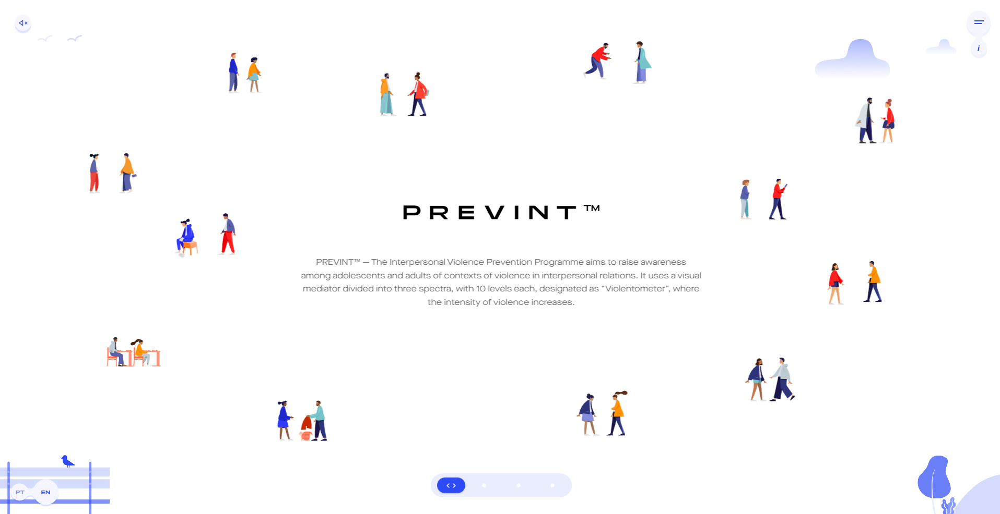
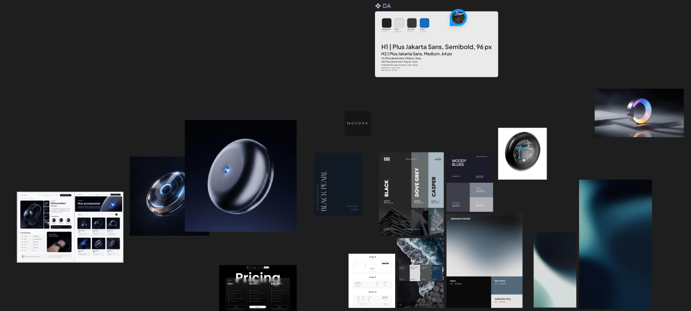
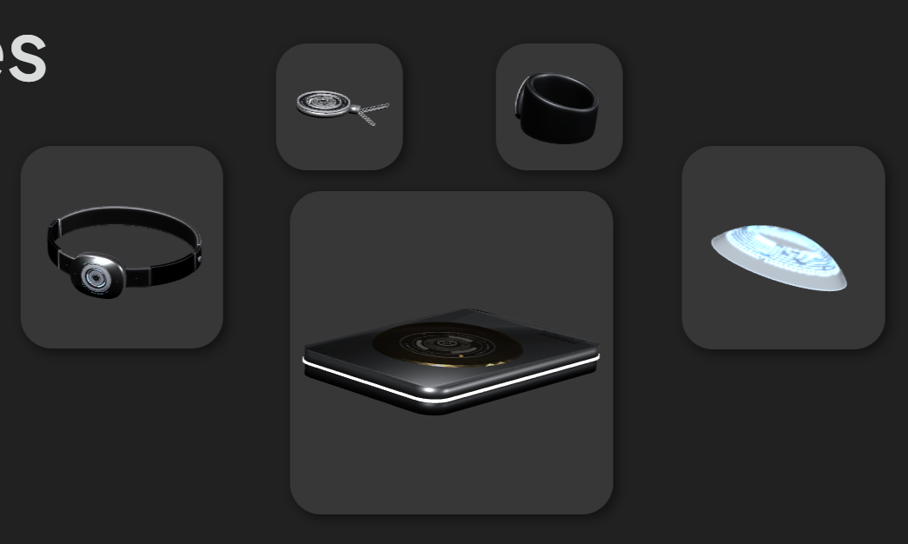
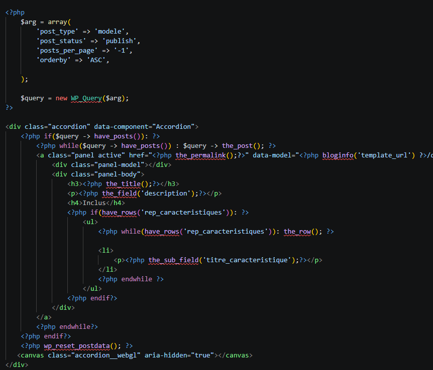
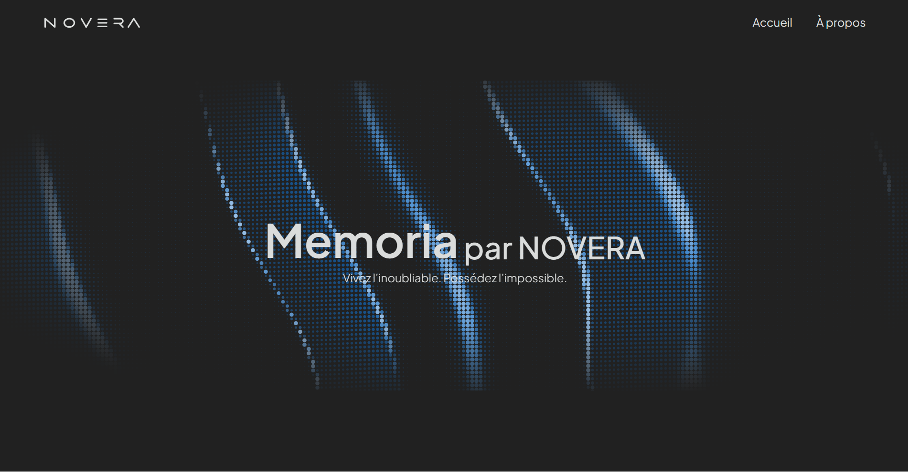

2026
WordPress
PHP
HTML/CSS/JS
Prix «Meilleure innovation»
Scolaire
Memoria est un site créé pendant l'évènement du WebJam. On avait 36h pour créer un site à propos d'une invention interdite par une multinationale prenant le contrôle du marché de l'innovation. Ce projet a gagné le prix de «Meilleure innovation» de la part des juges.
Intégration Web et PHP : Simon Savard-Blondel, Charles Bilodeau
Design graphique : Magalie Cyr
Modélisation 3D et contenu : Zack Lamontagne
L'IA a été utilisée pour aider à la conversion des ReactBits en JavaScript et à l'intégration de certains canvas WebGL, notamment le carrousel d'accessoires et l'accordéon de modèles du produit. Elle a aussi aider à la modélisation des produits et accessoires ainsi que le brainstorm d'idées et les images.
01/05 -
Nous avons eu comme idée de faire le site majoritairement en horizontal avec la librairie GSAP pour avoir une expérience utilisateur différente des autres équipes. Nous nous sommes inspirés des sites de matériaux ou de construction pour les détails des modèles et accessoires.

02/05 -
Nous avons décidé de garder le design simple puisqu'on avait la tâche supplémentaire de faire le site en horizontal. Nous sommes restés dans les couleurs grisâtres avec un bleu comme couleur d'accent.

03/05 -
Pendant que le design est en création, mon collègue commence à modéliser les modèles et accessoires qui seront utilisés pour le site. En même temps, un autre collègue et moi commençons le HTML et le CSS qui sont prêts pour l'intégration pour sauver le plus de temps possible.

04/05 -
Lorsque l'intégration HTML/CSS/JS est complètement finie, toute l'équipe s'attaque à l'intégration PHP avec WordPress pour les dernières heures du Webjam.

05/05 -
Quand la majorité du PHP est terminée, on corrige quelques erreurs d'affichage pour essayer de peaufiner le plus possible avant la présentation du site pour les juges.

Le plus grand défi était de faire le site complet en 36h. C'était aussi le premier projet en grande équipe que j'ai fait. Il y a aussi le défi de faire en sorte que le site marche correctement en horizontal.
Ce n'est probablement pas la meilleure solution, mais ma collègue et moi avons décidé de ne pas dormir pour finir tout le HTML pour être sûr d'avoir le temps de finir le projet. Nous avons aussi décidé de faire en sorte que seule la page principale soit horizontale et les pages de détails du produit soient verticales pour alléger la charge de travail.
J'ai approfondi mes connaissances avec GSAP et un peu de WebGL. J'ai aussi appris que faire un site complet en 36h est beaucoup plus possible que ce que je pensais.